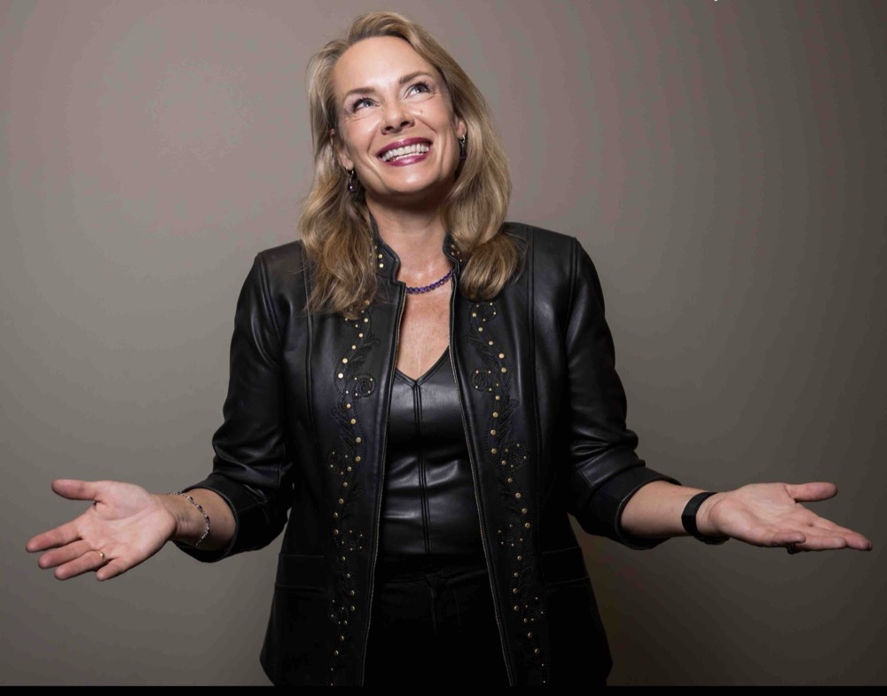

Executive coach and visibility strategist. I built a global personal brand from nothing, co-founded tech companies, wrote bestselling books, and got covered in Forbes, Fast Company, CNN, Inc., and Entrepreneur — and now I help accomplished women do the same thing with the expertise they've already earned.

I joined LinkedIn in 2004, back before it had even half a million users, and by 2006 I'd founded Linked Into Business and turned that early-adopter instinct into a career — eight bestselling books between 2012 and 2022, including LinkedIn Marketing: An Hour a Day. In 2017 I co-founded Vengreso, and we scaled it into a Fortune 500 digital sales training company.
And then I hit the moment so many of my clients know: the work is good, but the fit is off. The success is real, but something is missing. I exited Vengreso in 2022 — and then made the mistake I now warn every client about: I threw the baby out with the bathwater. I walked away from my LinkedIn and tech expertise for a full year before realizing the work wasn't to erase what I'd built, but to take the puzzle pieces apart and reassemble them into something that actually fit. That's the business you're looking at now.
Coaches, consultants, trainers, advisors, authors, speakers — women with twenty-plus years of real expertise who are done letting it sit invisible.
What my work has taught me: deep expertise does not automatically become traction, and experience does not automatically become a business. The bridge between the two is positioning, infrastructure, and the right technology — and that bridge can be built a lot faster with someone who's already crossed it.
Canadian and American dual citizen, with homes in Colorado and Costa Rica. Hang glider pilot since I was 15 — my dad took up the sport at 55 and brought me along, which probably explains a lot about how I feel about second acts. Master's in Cultural Studies, Ph.D. coursework in Women's Studies. First published at 45. Married at 50. The timeline keeps proving the point: the good chapters don't run out.
I also believe in giving back — organizations I've supported include Dress for Success, GirlsClub, Legacy, iGive Global, Workforce Centers, the Arc, and the Humane Society.